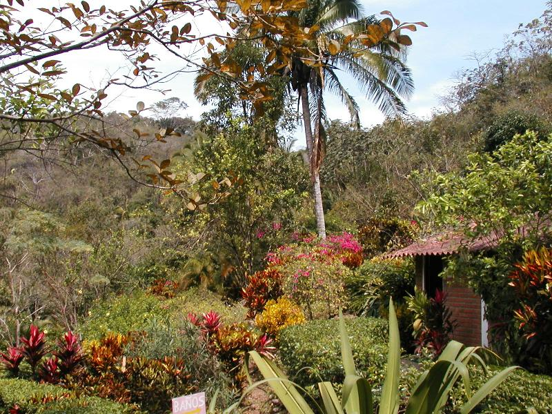
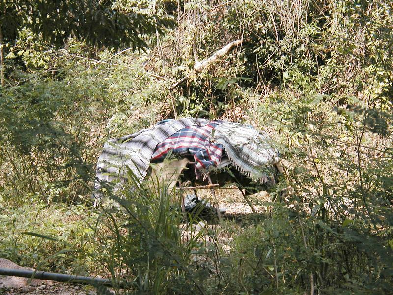
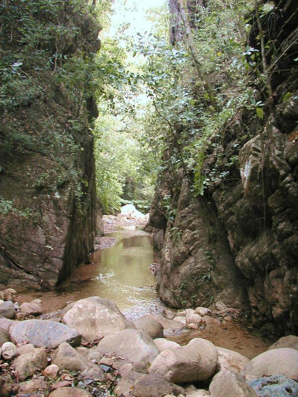

El Nogalito
El Nogalito is a cluster of new-ageish businesses in a wilderness area about 20 minutes south
of town. There’s a vegetarian
restaurant, massage therapy, and expensive guided nature hikes. Took a taxi, arriving around

View from the Restaraunt
This looks a lot like the area I grew
up in before development inverted the Earth, putting the tar and volatile
hydrocarbons on top, and the topsoil underneath. Made me mad. I’m
starting to view
Asked the
waiter where to arrange the guided hike.
He misunderstood my question and directed me to the trailhead. So I was
able to hike for free and in blissful solitude. The trail
lead up the hill along a stream. Got chewed up by
mosquitoes in the middle of the day, so the Malarone
was a good idea, Dr. Sohini.

Geodesic tent
Would have liked to meet whoever
lives here.
I passed a
scout troop. No drab green here—the boys wear turquoise shirts, the girls saffron. Also passed a couple
families on outings. Found myself following a Latin convention I’d forgotten—nod
to the bull, don’t acknowledge the cows.

There was wild coffee growing along the banks—or maybe it
was wild chocolate, the berries looked like coffee but were elongated. Maybe
there were both, and I’d truly discovered paradise. This is where I turned
around and started scrambling back down.
Back at the base, the new age lady
offered to call a taxi. She gave me a
tour of the facilities, and a bottle of water.
I asked her how much it cost, and she waved me away, so I said “Dios le pagará”
(we were doing this in Spanish.) She went into the office, came back and said a
taxi would arrive in an hour. Having
nothing to do today but smile, I sat down and waited. Ten minutes later came a news flash: No,
there were no taxis available. But 18 year
old Alejandro could take me back on his motocicleta for a propina. I’d noticed the bike. It was a 500cc that just came up to my
knees. I know from experience (I refuse
to say with whom!) how hard a bike is to control with an oversize passenger. Plus, there was a mile of washboard dirt
ahead, then the cobblestone streets of the city.
So I asked her to call the hotel, where
taxis always clogged the side streets queuing up. Nope, no taxis at the
hotel. Funny how she was having all these conversations with an open
office door and I never heard a sound.
She must have been whispering. But there was a car now, and Alejandro
would drive me back for $30, an absurd price. I asked her how much that was in
pesos, and the price dropped to the equivalent of taxi plus tip. Fair enough.
When we got back, I told Alejandro, “Tengo tambien un
motocicleta, y yo se es deficil manejar
con parajero grande…por yo. No por Ud.” That got my
biggest laugh of the day. (“I have a
bike too, and I know how hard it is to drive with a big passenger. For me. Not for you, of course.”)
Now. Considering that the free water was to soften
me up for a scam, that “Dios le pagará” (“God
will repay you”, the classic beggar’s line) becomes rather ominous, wouldn’t
you say?